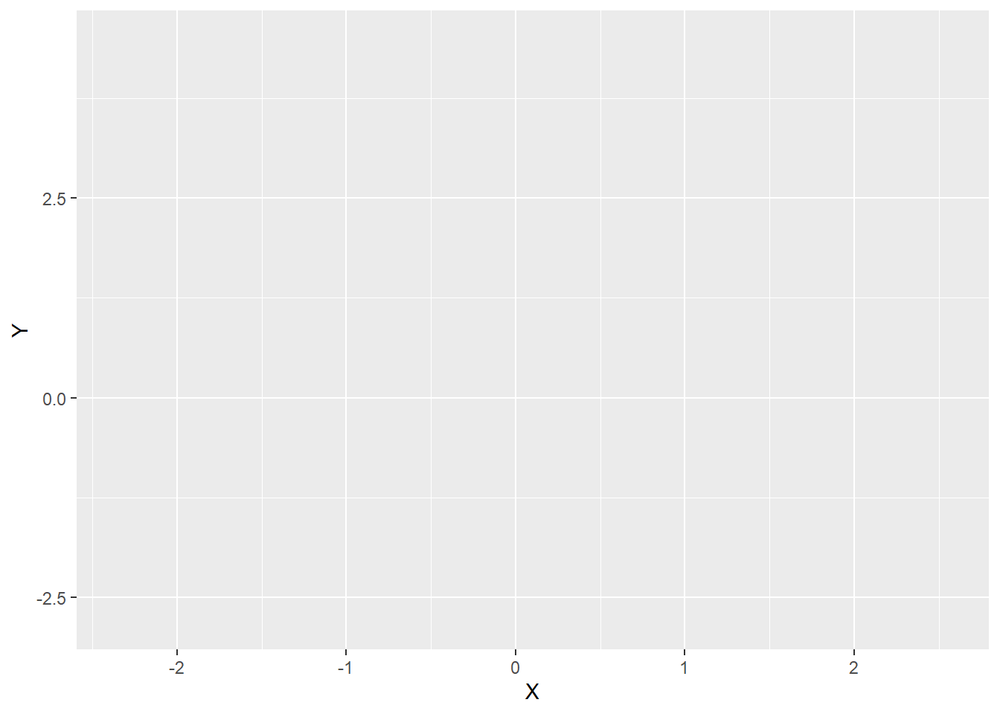
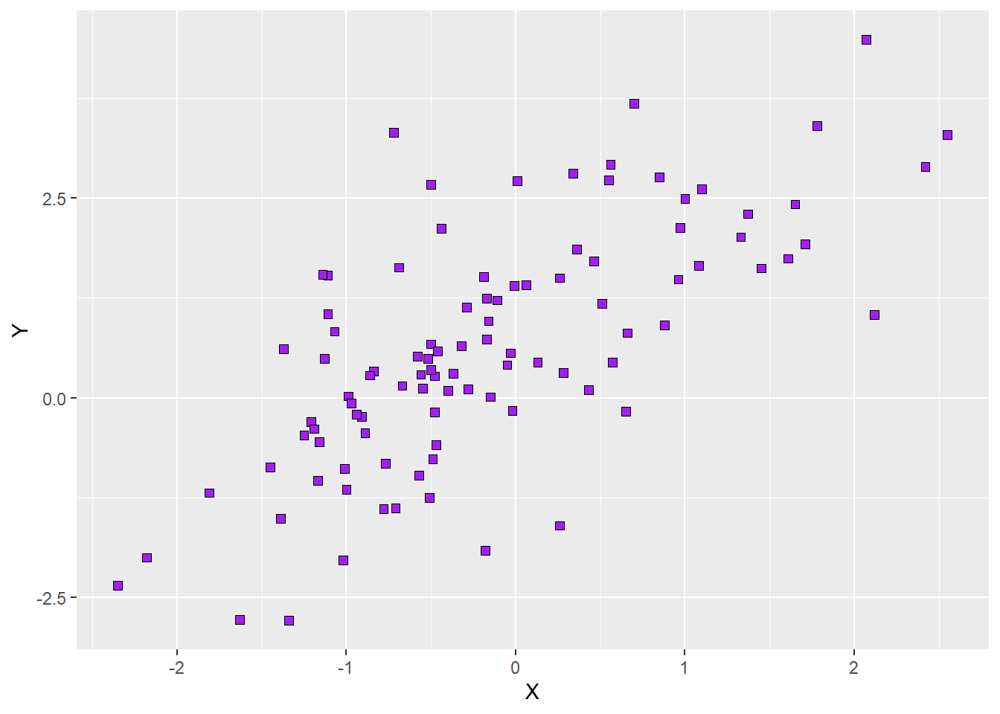
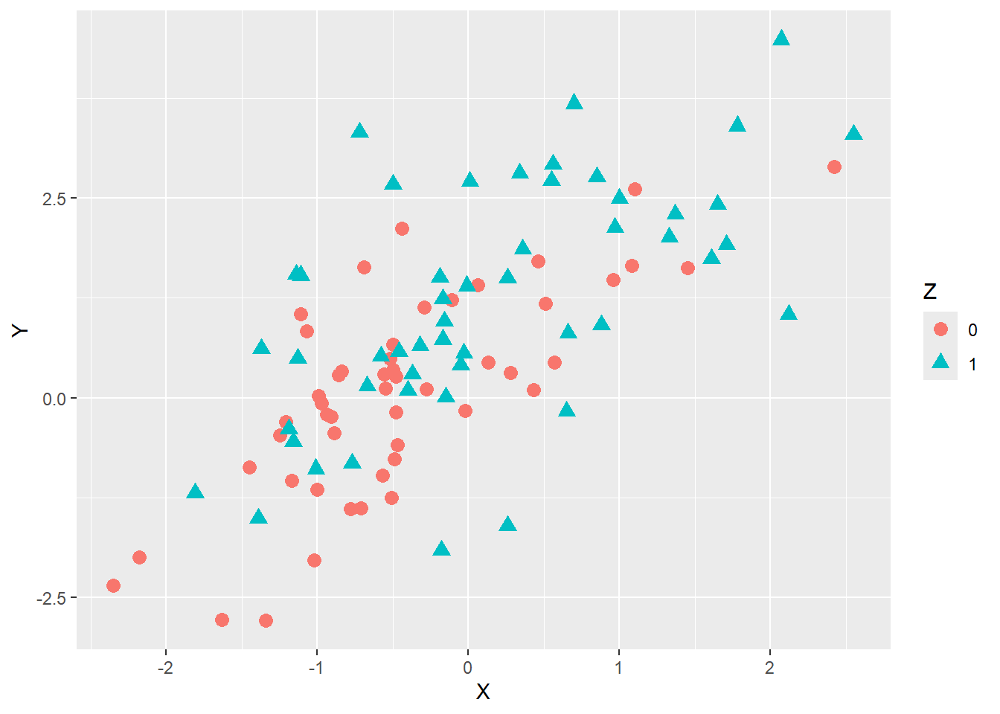
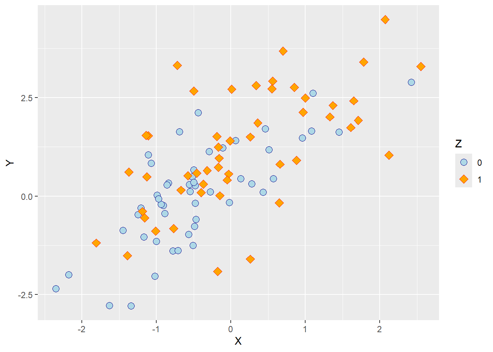
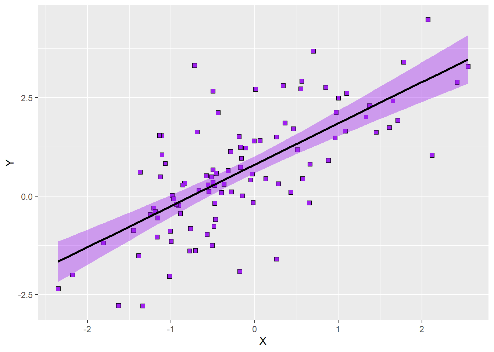
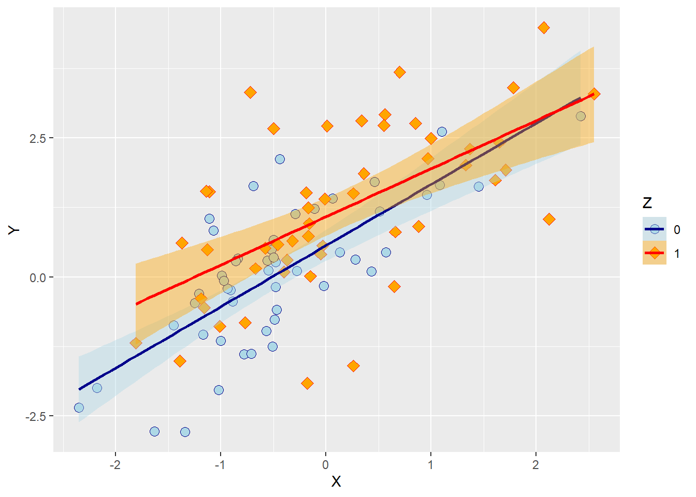

ID W X Y Z
1 1 1 -1.21 -0.30 0
2 2 2 0.28 0.31 0
3 3 3 1.08 1.65 0
4 4 4 -2.35 -2.35 0
5 5 5 0.43 0.10 0
6 6 1 0.51 1.18 0Scatterplots
Scatterplots are the most common way to plot two continuous or ordinal variables against each other. These two variables translate to coordinates on the x- and y-axis in a coordinate system, and we plot points (in the broad R sense) on these coordinates.
As always, we need data before we can plot. We will use the same made-up data we used to plot histograms. As a reminder, the data is stored in df1, and it contains five variables, \(ID\), \(X\), \(Y\), \(Z\), and \(W\). Here, \(X\) and \(Y\) are of special interest because they are continuous variables. Here is a brief reminder of what the data looks like.
If we want to create a scatterplot, we first need to create a base plot with the appropriate aesthetics. For now, we are content with a simple plot of the two continuous variables in our data set, \(X\) and \(Y\). The syntax for the base plot would look like this:
# create a base plot for a scatterplot of X and Y
p1 = ggplot(data = df1, mapping = aes(x = X, y = Y))Running this code will create a new object in our environment. Calling the objects name will show the empty plot in the plot tab. This is how it would look:

R will choose the limits of the axes to fit the data, and it will display the variable names on the respective axis. It will also show white horizontal and vertical grid lines but nothing else because we have not yet added a layer with a geom.
We will now add this second layer using the function geom_point, which will plot points at the coordinates determined by the values of \(X\) and \(Y\) in each row of our data frame. The function has several arguments we can use to customise the colour, size, and shape of the points that are applied to all points. The shape of the ‘points’ determines whether they only have one colour value or whether they have a filling colour that is separate from their border colour. Let’s look at the function arguments in more detail:
- size (optional): a numeric value indicating the size of the points; the default is 1; larger values produce larger points.
- colour (optional): a character string either in the form of a colour word an RGB code; default is ‘black’ (‘#000000’); determines the colour of all points. For some point shapes, this argument determines their whole colour, whereas for others it only determines the border colour.
- fill (optional): a character string either in the form of a colour word an RGB code; determines the filling colour of all points, given that they can be filled (see below); default is NULL, which means no filling,t hat is, transparent shapes.
- shape (optional): a numeric value indicating how the points should look like; the default is 19, which produces single-colour points (no separate colours for border and filling).
As a reminder, here are the different point shapes and their respective numbers. In this list, colour is blue, and fill is light blue, allowing us to infer which point shapes have only the colour argument and which have both the colour and fill argument.

Let’s say we want the points in our scatterplot to be purple squares (shape 22) of size 2 with a black border. The following syntax creates the new plot as an object of its own. Calling that new object’s name will show the new plot in the plot tab:
# add a layer with points to the base plot such that the points
# are purple squares with a black border
p2 = p1 +
geom_point(shape = 22, colour = 'black', fill = 'purple', size = 2)
p2Here is what the plot would look like:

We can now spice up the plot a bit by adding a third variable that determines the appearance of our points. We will use \(Z\) as this third variable. Adding this third variable requires us to create a new base plot, in which we define which aspects of our points appearance should depend on the value of \(Z\). Let’s go nuts and and make the points differ according to \(Z\) in terms of shape, colour, and fill (we could also let them differ in terms of size, but this is not recommended for discrete variables). Here is what the syntax for this base plot would look like:
# create a new base plot for a scatterplot with different points for each level of Z
p3 = ggplot(data = df1, mapping = aes(x= X, y = Y,
shape = Z,
colour = Z,
fill = Z))There is one very important thing to note, now that we told the base plot that our the way our geoms look like should vary by a third variable: we can no longer define the respective aesthetics via function arguments of the function adding the geom (we can, however, still enter function arguments that are constant for all points, such as, in our example, their size).
As a first step, we can call the geom_point function without any arguments. This will result in a plot, in which the aesthetics differ according to some default values. That is, ggplot2 comes with a default colour palette from which it chooses the colours, and it has a list of default values for point shapes, too. Let’s give the default version a spin and see how the plot looks like. Here is the syntax:
# create a new base plot for a scatterplot with different points for each level of Z
p4 = p3 +
geom_point()
p4Once we run this code above, this is what appears in our plot tab:

Let’s inspect that plot. What we can see is that we now have points that differ in terms of their colour and shape. The plot also has a legend showing us which value of \(Z\) is associated with which type of point. However, since ggplot2 chooses single-colour point shapes per default, the fill argument had no effect. In addition, the default colours are not ideal because they are difficult to discern for people who have red-green colour blindness. The question is how we can manually change the colours, shapes, and filling of the points.
Changing the appearance of points manually
When using ggplot2, we can change the appearance of geoms by adding further layers to the plot overwriting the defaults. The functions we will use the change the appearance of the points are called scale_shape_manual, scale_colour_manual, and scale_fill_manual. As their names suggest, these function allow us to assign the shape, colour, and fill attributes to the points in our plot manually. The only function argument each of the functions needs is called values. Since our grouping variable \(Z\) has two levels, we need to make sure that the values argument for each function is a vector of length 2. The nature of these values depends on the respective aesthetics we aim to change (numbers between 1 and 25 for the shape, RGB odes or colour words for colour and fill).
Let’s say we want our points to be filled circles if \(Z=0\) or diamonds if \(Z=1\) (shapes 21 and 23, respectively). The circles should be light blue with dark blue borders whereas the diamonds should be orange with red borders. To produce these points, we can simply take the current version of our plot and add three layers using the functions mentioned above. The order in which we add these functions does not matter. The only thing we need to keep in mind is that we assign the values in each of these functions in the correct order. Since \(Z\) has two levels (0 and 1), the first value corresponds to the first level of \(Z\) (0) and the second value to its second level (1). Here is what the syntax would look like:
# change the appearance of the points by manually assigning shapes, border colours and filling colours
p5 = p4 +
scale_shape_manual(values = c(21,23)) +
scale_colour_manual(values = c('darkblue', 'red')) +
scale_fill_manual(values = c('lightblue', 'orange'))
p5Running the code above will create a new object containing the updated plot. Calling the new object’s anme will produce the following plot in the plot tab:

As we can see, the points now differ in terms of shape, filling colour and border colour as intended.
Adding regression lines to scatterplots
A nifty feature of ggplot2 is that it allows us to add regression lines to a scatterplot. All we need to do is add a layer to our plot that contains a new geom, the line we want to add. For the sake of simplicity, we will first do so with the simple scatterplot that does not differentiate between the two levels of \(Z\) (p2). The function that allows us to add a line geom for a regression line fitted to the data is called geom_smooth. What this function does is subject the data to a statistical transformation in the sense of a regression model and then plot the predicted values of that model.
We need to define three function arguments for the geom_smooth function:
- method (optional): a character value defining the type of regression model being fit to the data; default depend on the sample size, ‘loess’ (local polynomial regression) for fewer than, 1,000 observations, ‘gam’ (generalized additive model) otherwise; we can choose ‘lm’ (linear model) or ‘glm’ (generalised linear model) instead; ‘lm’ will fit an ordinary least squares regression to the data.
- formula (optional): a formula type object telling R how the regression model looks like; default is “y ~ x”, but R will return an ugly message if we do not specify it manually.
- se (optional): a boolean value determining whether the regression line should be accompanied by a confidence band; default is TRUE.
Let’s say we want our scatterplot to contain an ordinary regression line with confidence bands. Here is what the syntax would look like:
# add regression line with confidence band to a scatterplot
p6 = p2 +
geom_smooth(method = 'lm', formula = y ~ x, se = T)
p6Running the code above will yield the following plot:

As we can see, we now have the regression line for a simple regression model in the plot, and the grey band around the line represents the 95% confidence interval around the model predictions. It is quite typical for these confidence bands to be slightly narrower at the extremes of our predictor because we usually have fewer extreme data points. This simply means that the prediction errors are slightly larger at the extremes.
If we do not like the colours ggplot2 assign to the regression line per default, we can change it manually inside the geom_smooth function. Keep in mind that defining colours inside the function for a geom only means that we assign this colour to all geoms created by that function. Since we only have one regression line here, that is not an issue. We can change the colour of the regression line using the colour argument while fill allows us to change the colour of the confidence band. Let’s try to set the colour of the regression line to black and the colour of the confidence band to purple so the aesthetics align better with those of the points. Here is the syntax:
# add regression line with confidence band to a scatterplot
p6 = p2 +
geom_smooth(method = 'lm', formula = y ~ x, se = T,
colour = 'black', fill = 'purple')
p6Here is how the plot looks with the customised colours:

The final question we will address here is what happens if we have split the points in our scatterplot according to a third variable as in the examples above. Can we plot separate regression lines in this case? The answer is yes. Let’s take the plot with the customised appearance of the points depending on the values of \(Z\) (p5) as the basis and add a new layer containing regression lines. Remember that we already defined both colour and fill to vary as a function of \(Z\) and that we also specified which colours correspond to which level of \(Z\)? The same colours will be applied to the regression lines and confidence bands. What this means is that the colours we specify manually using the scale functions and the rules as to how the colours vary are applied to all geoms. In our case, this is convenient because it means that we do not need to define those colour again. Instead, we can just call the geom_smooth function without specifying either colour or fill. Snytax as follows:
# add regression lines for each level of Z with confidence bands
p7 = p5 +
geom_smooth(method = 'lm', formula = y ~ x, se = T)
p7Here is the resulting plot:

Notice how the legend of the new plot not only shows the points for each level of \(Z\) but also includes information about the colour of the regression lines and the confidence bands.